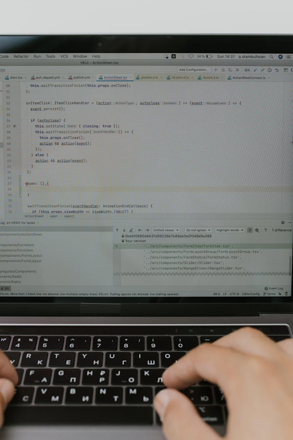

Técnico em informática
O Curso Técnico de Informática da Tech Educação oferece uma formação abrangente e atualizada para os futuros profissionais da área de tecnologia da informação. Com um currículo dinâmico e voltado para as demandas do mercado, os alunos têm a oportunidade de desenvolver habilidades em áreas como hardware, software, redes de computadores, segurança da informação, programação, gerenciamento de bancos de dados e design web. Nossos estudantes têm acesso a laboratórios modernos e equipados, além de uma equipe de professores qualificados e experientes, proporcionando um ambiente propício para o aprendizado prático e aprofundado. Ao longo do curso, os alunos são desafiados a aplicar seus conhecimentos em projetos práticos e reais, preparando-os para enfrentar os desafios do mercado de trabalho de forma eficaz. Ao concluir o Curso Técnico de Informática na Tech Educação, os graduados estarão aptos a atuar em diversas áreas, incluindo suporte técnico, desenvolvimento de software, administração de redes, segurança da informação e muito mais. Se você está buscando uma formação sólida e uma carreira promissora na área de tecnologia da informação, venha fazer parte da Tech Educação.
 Saiba mais